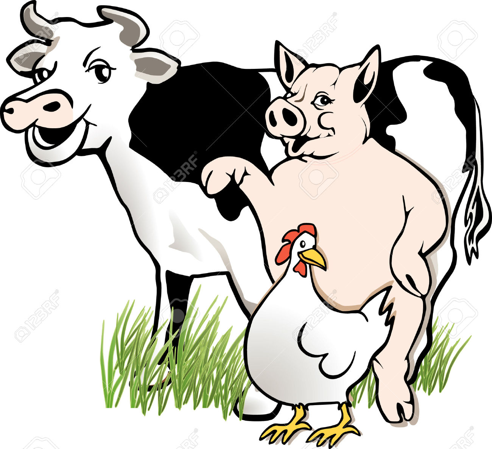

Pollos

Haz una prueba: piensa en un pollo; ¿en qué piensas exactamente? Hay probabilidades de que sea en
esos animales que vienen en bandejas en el supermercado o que dan vueltas mientras se asan. Pero
estos frágiles y sensibles animales tienen algunos secretos que hoy vamos a descubrir.
«Los pollos y las gallinas muestran un comportamiento social sofisticado; pueden reconocer y recordar
a más de 100 compañeros. Tienen más de 30 tipos diferentes de vocalizaciones».
Dr. Joy Mench.
Profesor y director. Centro para el Bienestar Animal.
Universidad de California.
Vacas
Las vacas son animales sociables e inteligentes a quienes les gusta pasar su tiempo
con otras compañeras. Algunas son tímidas, otras aventureras y sociables, otras recelosas
de los suyos, ¡justo como nosotros!
La relación entre la madres y la cría son especialmente fuertes, y empieza cuando la madre se aparta del
grupo para dar a luz a su cría. Una vez nacida, la madre empieza a lamerla y con ello se va familiarizando
con su olor. A las madres les gusta dormir junto a sus hijos, cuidarlos y protegerlos.
Cerdos
Los cerdos son animales muy limpios que evitan ensuciar las zonas donde viven, si disponen
del espacio suficiente tienen cuidado de no manchar las zonas donde comen o duermen. Si se bañan
en barro o lodo es simplemente para mantener su temperatura corporal baja ya que estos animales
son incapaces de sudar, además esta actividad contribuye a eliminar parásitos de la piel.
A menudo se dice que los cerdos tienen una inteligencia equivalente a la de un niño de tres años;
lo cierto es que diferentes estudios demuestran que tienen una gran memoria.
Además sueñan, reconocen sus nombres e incluso son capaces de «representaciones abstractas»,
siendo capaces de grabar una imagen en su mente durante mucho tiempo.
Gallinas
Las gallinas son animales sensibles e inteligentes además de muy sociables, seres a quienes les
gusta pasar el día limpiándose y acicalando sus plumas, picoteando, tomando el sol o dándose baños
de arena.
Muchos creen que la protección de las crías es un atributo propio de los mamíferos, pero aves como
las gallinas muestran que no hay nada más alejado de la realidad. Las madres emiten ruidos a los que
sus hijos no nacidos responden desde dentro los huevos. Las gallinas protegen a sus pequeños, y
prefieren tener nidos privados en áreas protegidas.
¿No son maravillosos todos estos animales? Si les damos la oportunidad, crean vínculos con nosotros
rápidamente, ¡justo como nuestros queridos perros y gatos!
Si quieres ayudar a estos increíbles animales puedes hacerlo consumiendo alternativas a la carne, huevos
y leche más a menudo, o incluso completamente. ¡Cada vez más personas lo hacen! ¿A quién no le gusta
ayudar a seres tan adorables?
Tienes toda la información que necesitas para dar los primeros pasos en las maravillosas websites Gastronomía
Vegana y Danza de Fogones. ¡Ánimo y no olvides contarnos en nuestras redes sociales cómo te va en el intento!